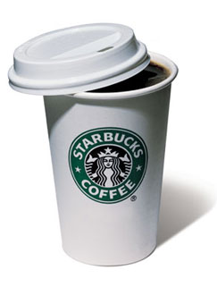

Monster Energy is an energy drink that was launched by Hansen Natural in 2002.[1]
Though it is not widely advertised in the media, Monster receives a large amount of recognition from its sponsorship of various sporting events, including motocross and car racing. Hansen Natural Corporation announced a distribution agreement with Anheuser-Busch in the U.S.[2] and Grupo Jumex in Mexico.[3] Hansen Natural Corporation announced a distribution deal with PepsiCo Canada in February of 2007. Contracts with existing distributors were bought out in these markets. In Germany Pepsi is the Producer and it is available there since summer/fall 2010. It is distributed in Australia by Schweppes as Coca-Cola Amatil, which manufactures Mother energy drink, an exclusive energy drink sold only in Australia and New Zealand.
Starbucks Corporation (NASDAQ: SBUX) is an international coffee and coffeehouse chain based in Seattle, Washington. Starbucks is the largest coffeehouse company in the world,[2] with 17,009 stores in 55 countries, including over 11,000 in the United States, over 1,000 in Canada, over 700 in the United Kingdom, and over 150 in Turkey.[1][3]
Red Bull is an energy drink sold by the Austrian Red Bull GmbH, created in 1987 by the Austrian entrepreneur Dietrich Mateschitz[1]. In terms of market share, Red Bull is the most popular energy drink in the world, with 3 billion cans sold each year.[2][3] Dietrich Mateschitz was inspired by an already existing drink called Krating Daeng which he discovered in Thailand. He took this idea, and to suit the tastes of Westerners, modified the ingredients,[4] and founded Austrian Red Bull GmbH in partnership with Chaleo Yoovidhya. Chaleo Yoovidhya invented the Thai energy drink Krating Daeng; in Thai daeng is red, and krating is the reddish brown bovine, gaur, an animal slightly larger than the bison. Red Bull is sold in a tall and slim blue-silver can. Krating Daeng is sold in Thailand and in some parts of Asia in a wider gold can with the name of Krating Daeng or Red Bull Classic.[5] Both are different products produced separately.
Caffeine is a bitter, white crystalline xanthine alkaloid that acts as a stimulant drug. Caffeine is found in varying quantities in the seeds, leaves, and fruit of some plants, where it acts as a natural pesticide that paralyzes and kills certain insects feeding on the plants. It is most commonly consumed by humans in infusions extracted from the bean of the coffee plant and the leaves of the tea bush, as well as from various foods and drinks containing products derived from the kola nut. Other sources include yerba maté, guarana berries, guayusa, and the yaupon holly.